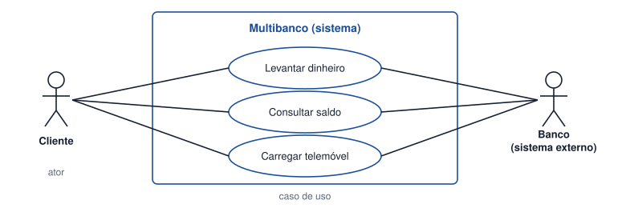
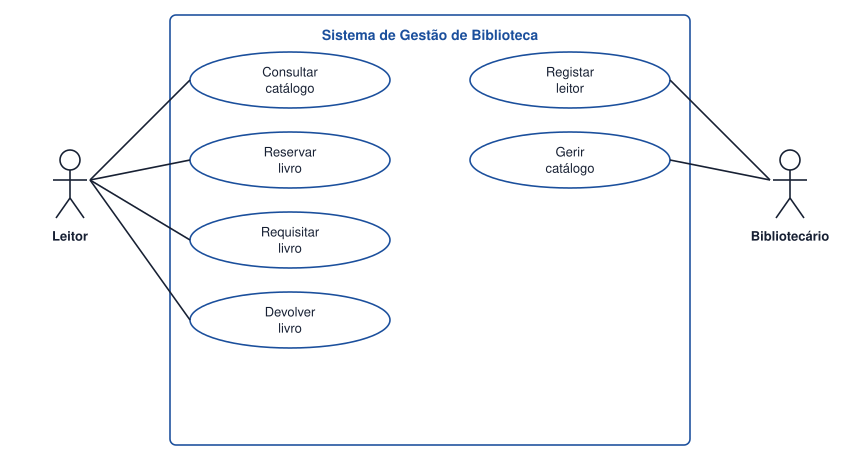

Tema 18 · UML e modelação do comportamento
Fronteiras do sistema, atores e casos de uso
Representação das fronteiras do sistema; atores e casos de uso
O diagrama de casos de uso mostra o sistema do lado de fora: quem o utiliza e para quê. É o modelo ideal para definir e validar a fronteira do sistema com o cliente.

Elementos
- Fronteira do sistema — retângulo que delimita o sistema. O que está dentro é construído; o que está fora, não.
- Ator — papel desempenhado por quem interage com o sistema e que está fora dele: uma pessoa (Leitor), outro sistema (Banco) ou o tempo (um processo agendado). Um ator é um papel, não uma pessoa concreta.
- Caso de uso — um objetivo que o ator quer alcançar com o sistema. Representa-se por uma elipse e nomeia-se com um verbo e um complemento: Requisitar livro.
- Associação — linha que liga o ator aos casos de uso em que participa.
Como identificar atores e casos de uso
- Quem usa o sistema? Quem lhe dá informação ou a recebe? → atores.
- Para cada ator: o que precisa de fazer? → casos de uso.
- Cada caso de uso deve ter um resultado visível e com valor para o ator.
- Revisitar os requisitos funcionais: cada RF deve estar coberto por, pelo menos, um caso de uso.
Um caso de uso é um objetivo, não um passo. «Introduzir o PIN» é um passo de «Levantar dinheiro».
Atividade
Identificar atores e casos de uso de um sistema de biblioteca
Identifique os atores e os casos de uso de um sistema de gestão de biblioteca, a partir dos requisitos RF01 a RF11 (tema 5). Associe cada ator aos casos de uso que utiliza.
Ver proposta de resolução

| Ator | Casos de uso |
|---|---|
| Leitor | Consultar catálogo, Reservar livro, Requisitar livro, Devolver livro |
| Bibliotecário | Registar leitor, Gerir catálogo e, no balcão, apoiar as requisições e devoluções |
Como alternativa, pode considerar-se o Bibliotecário como o ator que efetua o registo de requisições no balcão. Qualquer das duas opções é válida desde que fique explícita a fronteira e se mantenha coerente nos restantes modelos.
Em resumo
- O diagrama de casos de uso mostra quem usa o sistema e para quê.
- A fronteira separa o que se vai construir do que fica fora.
- Atores são papéis externos; casos de uso são objetivos dos atores.
- Cada requisito funcional deve estar coberto por um caso de uso.